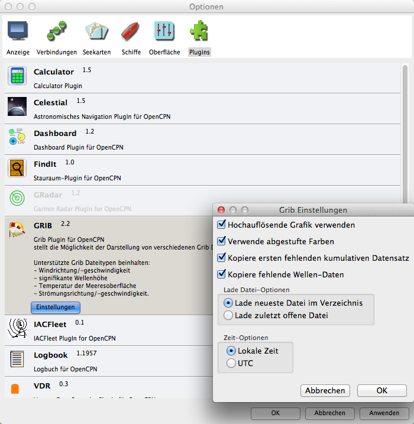
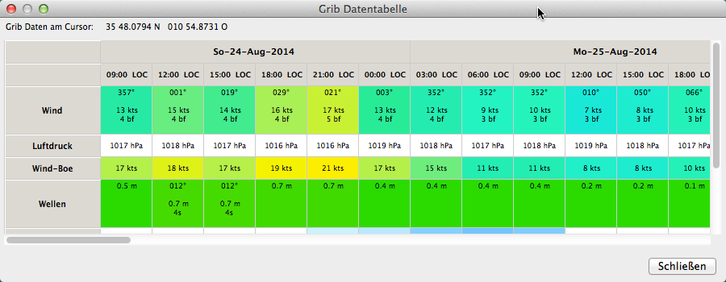

Grib Plugin
OpenCPN hat einen einfachen Grib Wetter Datei Anzeiger Plugin mit einem begrenzten Satz von Features, jedoch nützlich für unterwegs. Es ist nicht möglich,
von OpenCPN aus Grib Dateien herunter zu laden. Es sind jedoch viele externe Quellen für Grib Dateien verfügbar.
Franks-Weather ist ein guter Startpunkt.
Mit den neuen Versionen von OpenCPN wurde das Grib Plugin endlich etwas überarbeitet. Es ist nun auch möglich, Grib Daten direkt mit dem Plugin von saildocs (siehe unten) oder zygrib.org herunterzuladen. Allerdings ist das noch nicht ganz zu Ende gedacht, die Grib Daten kommen per eMail-Anhang und müssen noch vom Mailer in das Grib-Verzeichnis per Hand kopiert werden. Zudem muß das Programm sendmail bzw. postfix auf dem Rechner eingerichtet sein, sonst kann das Grib Plugin keine Anforderungs-Mails an saildoc oder zygrib senden. Für zygrib.org ist außerdem ein Account erforderlich.
Die Einrichtung von sendmail/postfix auf einem Mac OS X Computer mit noch aktuell Mountain Lion (Maverick steht vor der Tür) ist unten beschrieben.

In den Einstellungen (Preferences) markieren Sie "GRIB-Symbol anzeigen" und "Hochauflösende Grafik verwenden", da Sie ja eine neuere Computer Hardware haben.
Was ist eine Grib Datei?
Anleitung zur Installation/Konfiguration von send/postfix für Mac OS X Mountain Lion
Nach etwas Internetsuche habe ich es geschafft, sendmail/postfix auf Mac OS X Mountain Lion zu konfigurieren. Ohne das kann man die eMail Plugin Funktion des Grib Plugins nicht verwenden. Das normale Mail Programm des Betriebssystems geht dafür nicht. sendmail/postfix sind Teil des Betriebssystems Mac OS X. Erforderlich ist auf jeden Fall ein einigermaßen sicherer Umgang mit dem Terminal (auch Befehls-Konsole genannt). Das folgende Beispiel behandelt einen Mail-Account bei Google-Mail. Die Einstellungen müssen mit Superuser-Rechten (sudo) vorgenommen werden. Befehle mit vorangestelltem sudo erfordern also die Eingabe des Superuser-Paßworts. Als Editor habe ich in diesem Beispiel nano verwendet.
Damit Sie postfix nicht nach jedem Rechnerstart erneut starten müssen, können Sie im Launchdaemon 2 Zeilen einfügen:
<key>RunAtLoad</key> <true/>
Mit folgendem Befehl ändern Sie die Datei org.postfix.master.plist:
sudo nano /System/Library/LaunchDaemons/org.postfix.master.plist
Die Datei sollte dann so aussehen:
<?xml version="1.0" encoding="UTF-8"?>
<!DOCTYPE plist PUBLIC "-//Apple Computer//DTD PLIST 1.0//EN" "http://www.apple.com/DTDs/PropertyList-1.0.dtd">
<plist version="1.0">
<dict>
<key>Label<</key>
<string>org.postfix.master</string>
<key>Program</key>
<string>/usr/libexec/postfix/master</string>
<key>ProgramArguments</key>
<array>
<string>master</string>
<string>-e</string>
<string>60</string>
</array>
<key>QueueDirectories</key>
<array>
<string>/var/spool/postfix/maildrop</string>
</array>
<key>AbandonProcessGroup</key>
<true/>
<key>OnDemand/lt;/key>
<true/>
<key>RunAtLoad</key>
<true/>
</dict>
</plist>
In der neuen Version des Grib Plugins kann nun mit saildocs oder zygrib die Grib-Anforderung erfolgen:
